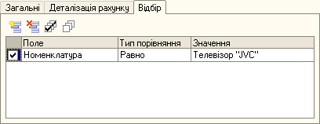
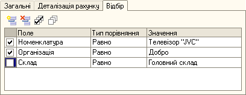
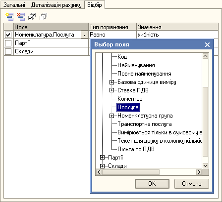
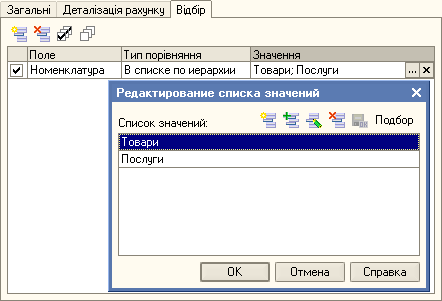

Відбір у стандартних звітах
Для чого потрібен відбір?
На закладці відбір задаються умови для обмеження даних, що виводяться у звіт.
Наприклад, при вказаному настроюванні відбору до звіту потраплять тільки дані по номенклатурі "Телевізор "JVC"

Які умови обмежують дані, що виводяться?
До звіту потрапляють дані, які задовольняють кожній умові, що відмічена прапорцем.
Наприклад, при вказаному настроюванні відбору до звіту потраплять дані по номенклатурі "Телевізор "JVC" та організації Добро.
Рядок Склад дорівнює "Головний склад" не враховується, бо його не відмічено прапорцем.

На які поля дозволяється встановлювати умови у відборі?
Умови можна встановлювати на запропоновані за замовчуванням поля, їхні реквізити та інші доступні поля для відбору, які можна вибрати за допомогою форми "Вибір поля".
Наприклад, при вказаному настроюванні відбору до звіту потраплять дані з номенклатурою, що не є послугою.

Що таке Тип порівняння?
У стовпчику "Тип порівняння" вказується тип порівняння поля зі значенням, що вказане у стовпчику "Значення".
"Тип порівняння" може бути:
- Дорівнює - значення поля має співпадати зі значенням умови
- Не дорівнює - значення поля має не співпадати зі значенням умови
- Менше - значення поля має бути менше значення умови
- Менше або дорівнює - значення поля має бути менше або дорівнювати значенню умови
- Більше - значення поля має бути більше значення умови
- Більше або дорівнює - значення поля має бути більше або дорівнювати значенню умови
- Інтервал (>, <) - значення поля має бути в інтервалі двох значень умови
- Інтервал (>=, <=) - значення поля має бути в інтервалі включаючи границю значення умови
- Інтервал (>=, <) - значення поля має бути в інтервалі включаючи ліву границю значення умови
- Інтервал (>, <=) - значення поля має бути в інтервалі включаючи праву границю значення умови
- Містить - значення поля має містити в собі рядок, вказаний в значенні умови
- У списку - значення поля має бути присутнім в значенні умови
- У списку за ієрархією (див. приклад) - значення поля має співпадати з будь-яким значенням зі списку, або знаходитись в будь-якій папці, що вказана в значенні умови.
- Не в списку - значення поля має бути відсутнім у списку значень умови
- Не в списку за ієрархією - значення поля має бути відсутнім у списку та усіх папках, що вказані в значенні умови
- Не в ієрархії - значення поля має не співпадати і бути відсутнім в папці, що вказана в значенні умови
- Не містить - значення поля не має містити в собі рядок, що вказаний в значенні умови
Наприклад, при вказаному настроюванні відбору до звіту потраплять дані зі всією номенклатурою, яка знаходиться в папках "Товари" та "Послуги".
